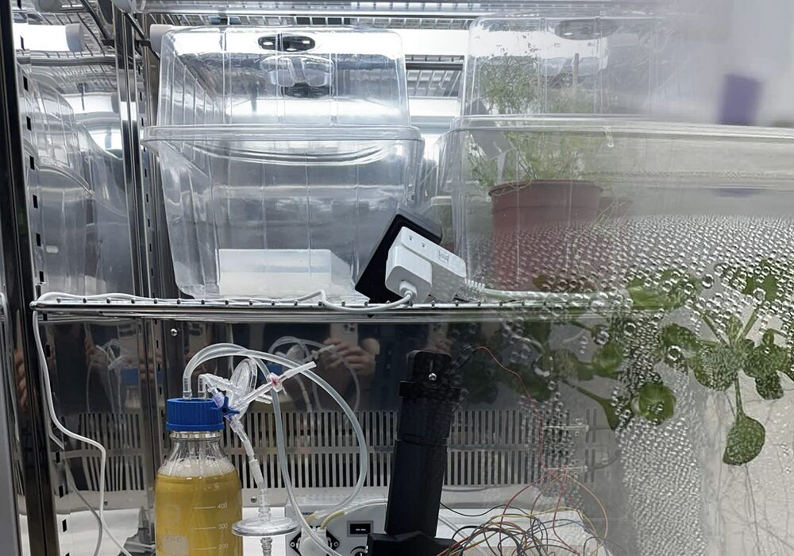
Project
The problem we picked, the machine we built for it, and what it did on the bench.
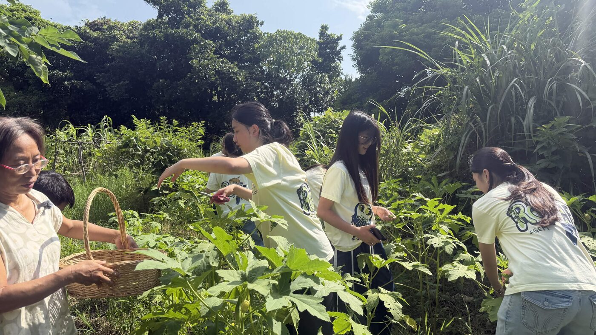
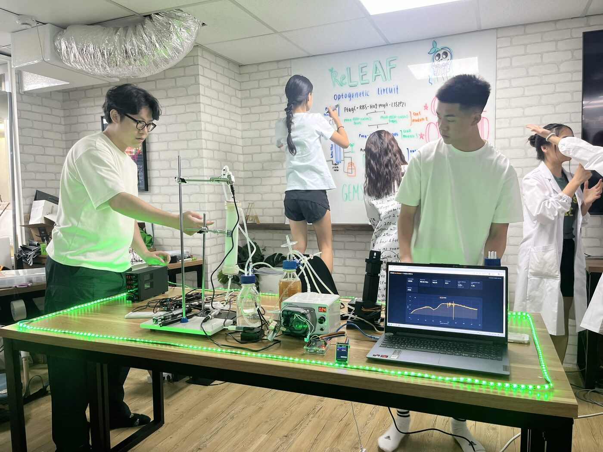

A stress-responsive optogenetic bioreactor for precision plant protection.
As long as it benefits the plants and does not disrupt the balance of nature, I am very willing to try any new technology. This allows me more time to go do the farming I love most.
The problem
Biological protectants that hold a plant through heat, drought and pathogen pressure already exist. What has not moved is the road between the factory that makes one and the half hectare that needs it.
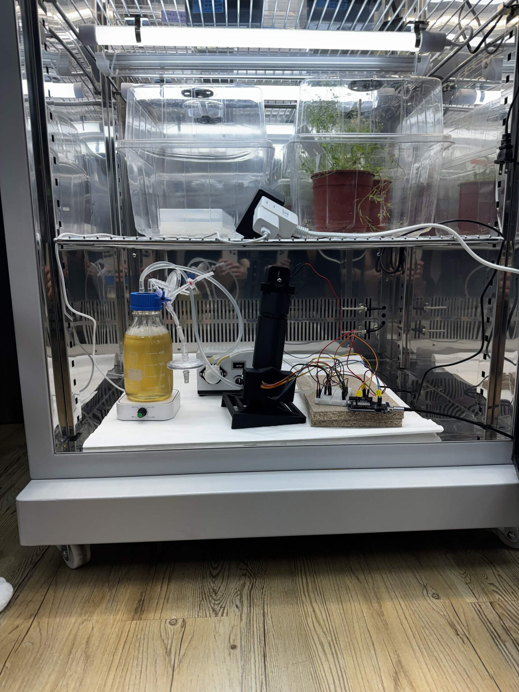
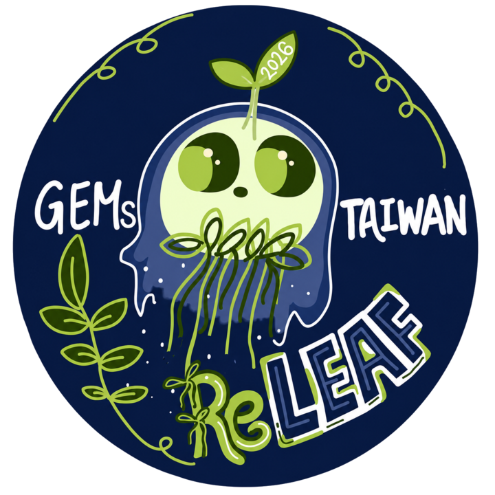
Make it where it grows.
A perfusion bioreactor that produces plant protectants at the farm, and runs them only when the crop is under stress.
Loading reactor 0%
The system
A hollow-fiber membrane splits the loop in two. Engineered B. subtilis circulates on the lumen side and never leaves it. The protectant they secrete crosses the fiber wall into the shell side and goes to the crop. Containment is a property of the geometry, not a procedure anyone has to remember.
Select a part to find it in the assembly, or read the full technical record.
Components
Synthetic biology
The controller decides when the crop is in trouble. The cell has to be told, and light is the only signal that crosses into a sealed vessel without opening it. Four modules carry that signal from the wall of the reactor to a secreted protectant.
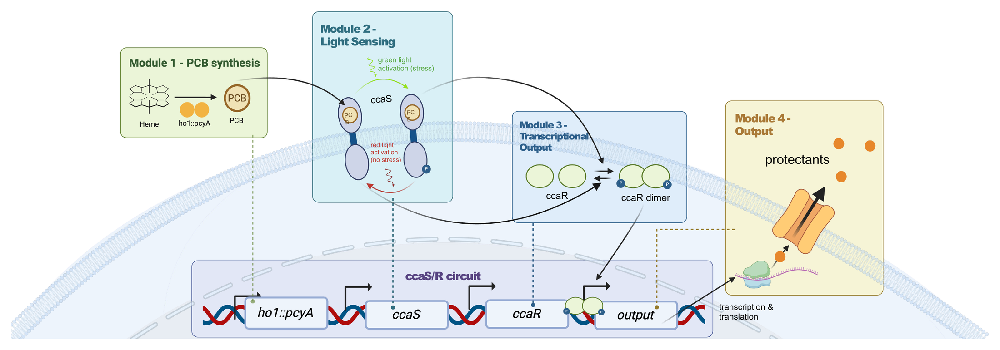
ho1 and pcyA turn the cell’s own heme into phycocyanobilin. Without that pigment the light sensor is blind, and B. subtilis does not make it on its own.
ccaS sits in the membrane holding the pigment. Green light flips it and it autophosphorylates. Red light flips it back, which is what makes the switch a dial rather than a fuse.
ccaS hands the phosphate to ccaR. Phosphorylated ccaR dimerises and binds the output promoter, so the state of one protein becomes the state of one gene.
The protectant is transcribed, translated and secreted into the medium, where the membrane is waiting to let it out and keep the cell in.
The controller has seen a stress condition coming. Transcription on.
Nothing to answer. Transcription off, and the culture goes back to growing.
Cloning is modularised, so any gene B. subtilis can express drops into the output position without redesigning the circuit around it, including protectants we have not designed yet. How we chose the first one →
Integrated human practices
Human practices here is a change log, not an attendance record. An entry with no design change attached is a photograph of a meeting and it does not go on the page. Farmers, growers, regulators and researchers each moved something, and the timeline below is ordered by what moved.

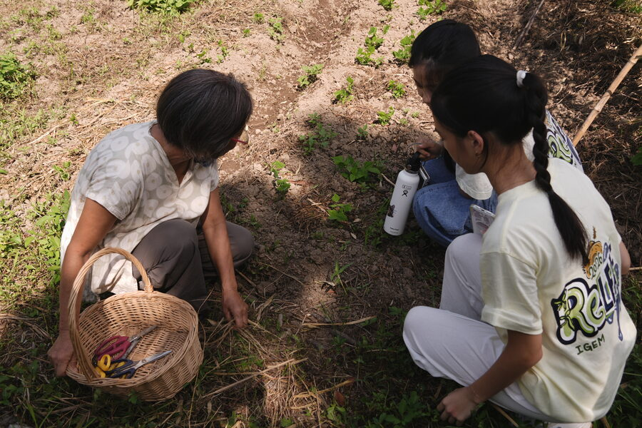
Moved dosing off a wall clock and onto soil-moisture state, and pushed the project toward the plant’s own defences.
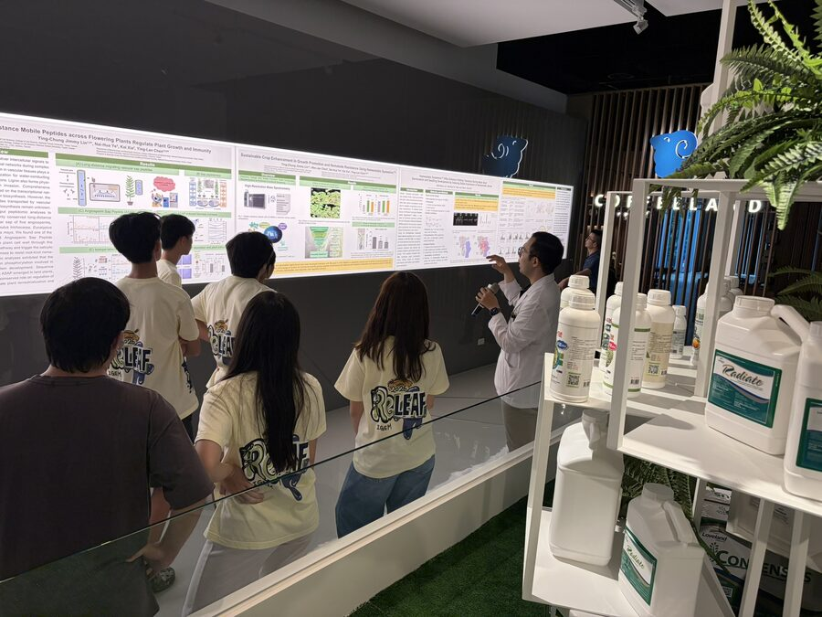
Set us straight on what regulators ask of a contained GMO, and on how far AI prediction can be trusted before a bench test.
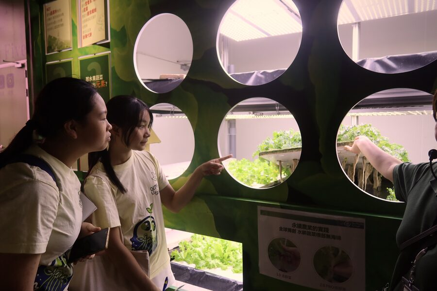
Showed us the plumbing a reactor would have to join, and sent the hardware team back to the CAD the same afternoon.
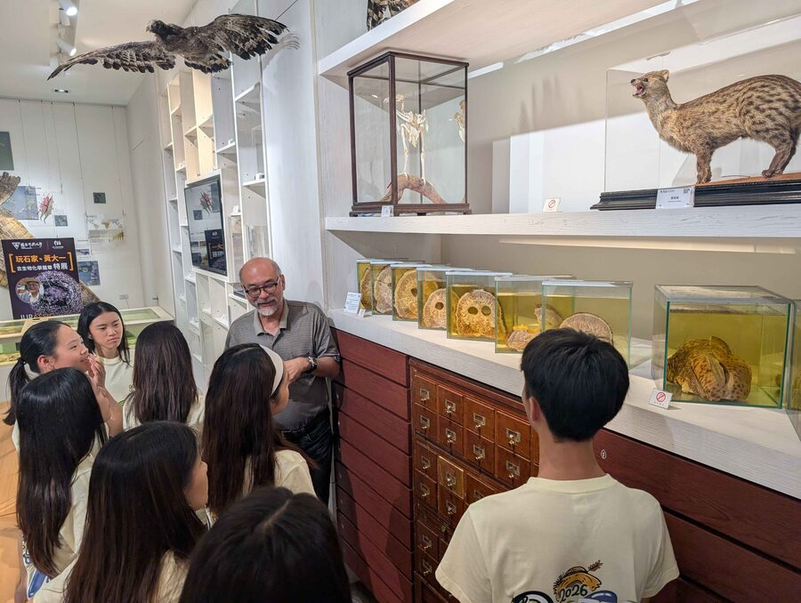
Plant stress, bioreactor scaling, containment and codon choice. Each conversation is logged with the change it caused.
The full change log, and the conversations we cannot publish yet →
Product
Each of these is a design target with a page behind it. Where a target has not been measured in our hands yet, that page says so in the same sentence as the target.
Protectants are produced next to the crop and run only when the crop needs them, which removes the six steps that happen before the farmer is involved.
A local soil sensor and a weather forecast decide when the system responds, so the trigger is the coming week rather than the calendar.
The loop drawing for this section is still being made by the dry lab team. Until it lands, the working drawings are on the Hardware pages.
The engineered bacteria stay on one side of a membrane for the life of the run. Nothing that leaves the reactor has been on their side of it.
Cutting out repeated centralised production, cold transport and shelf storage removes the part of the footprint that has nothing to do with the molecule itself.
Parts can be replaced, adapted or rebuilt for a different setup, and the expression cassette is a slot rather than a rebuild. Every file is open.
How we see farmers using ReLeaf
We see ReLeaf as more than a bioreactor. The goal is to give farmers more control over how and when they protect their crops, by moving biological production closer to them instead of asking them to wait for it to arrive and worry about storage.
Save the greenhouse render to
assets/img/home/vision-hydroponics-1200.jpg and this
frame fills itself in.
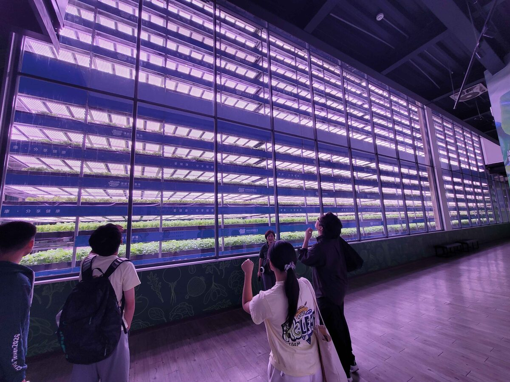
Save the open-field render to
assets/img/home/vision-field-1200.jpg and this frame
fills itself in.
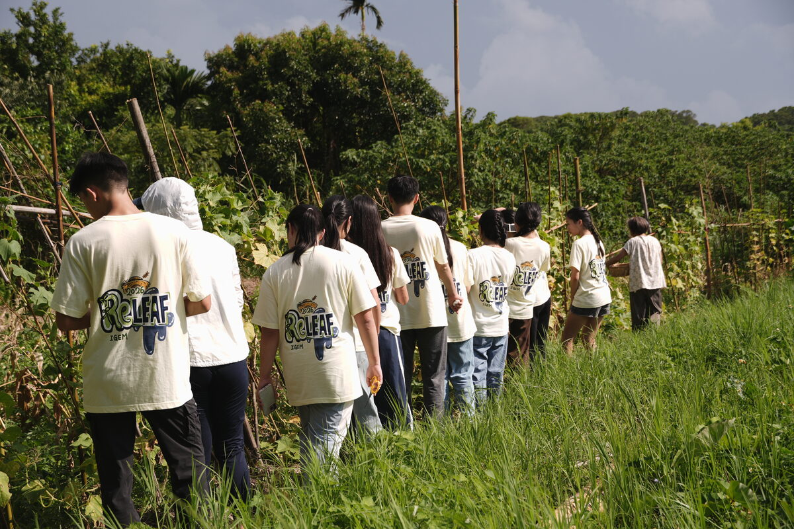
Every farm looks different. Responsive protection should meet farmers where they already grow.
The rest of the wiki
Five doors into the same year of work. Every page inside carries its own evidence, and says plainly where that evidence stops.

The problem we picked, the machine we built for it, and what it did on the bench.
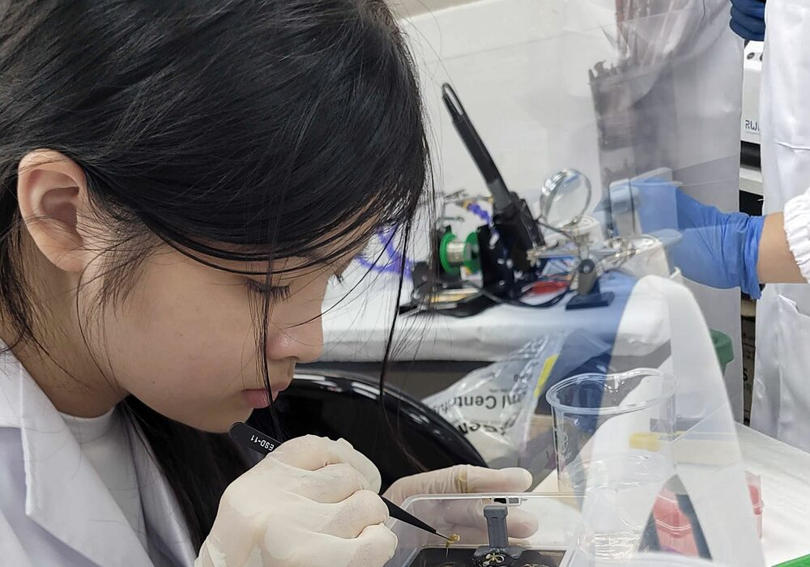
Protocols and runs, the parts, three ways to grow a plant, and how we kept the organism in.
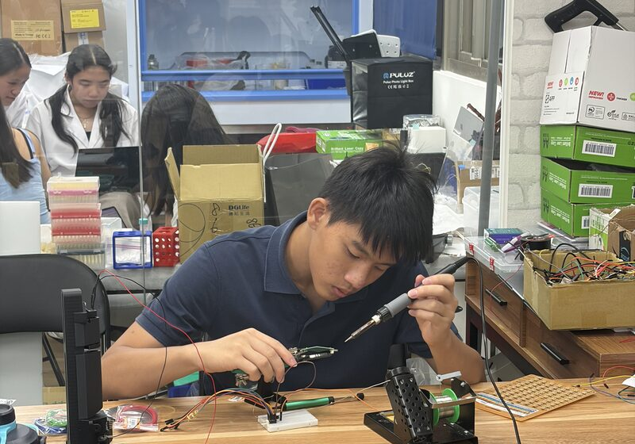
The maths, three instruments built from nothing, the code, and the peptide they were built for.
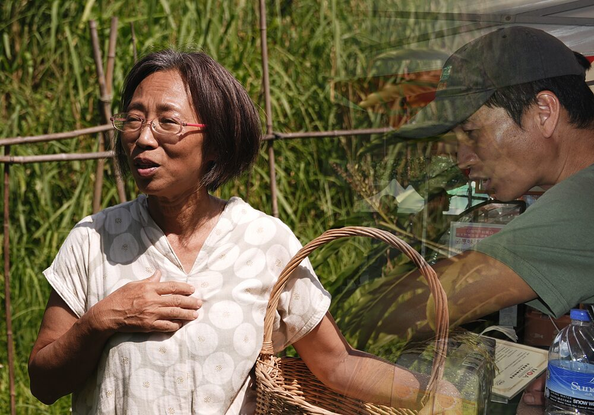
Who changed the design, who we taught, what it would cost, and the rules it has to meet.
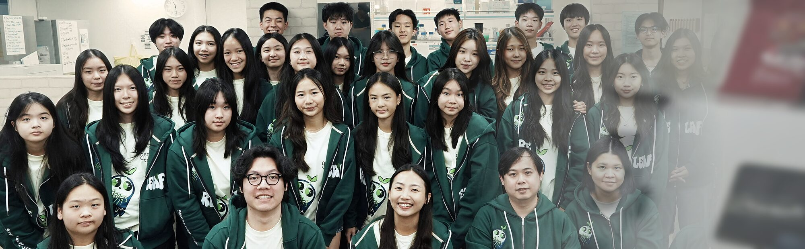
Forty-seven of us. Who did which part, the year in order, and the photographs from all of it.
Point at a page to see which other pages it is read alongside.